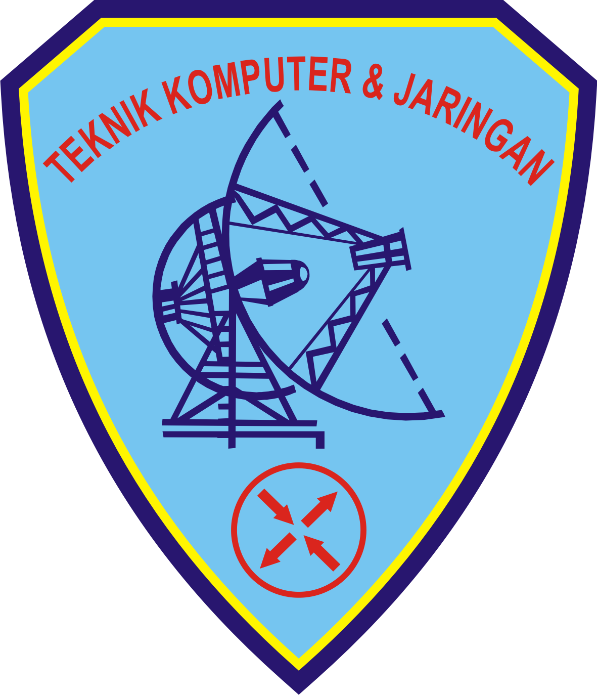

Apa Itu TKJ?
Teknik Komputer dan Jaringan (TKJ) adalah jurusan yang mempelajari tentang perakitan, instalasi, pengoperasian, dan pemeliharaan komputer serta jaringan komputer. Jurusan ini membekali siswa dengan keahlian untuk membangun dan mengelola jaringan internet, server, dan perangkat komputer lainnya—baik untuk kebutuhan personal, kantor, maupun skala industri.

Apa Saja yang Dipelajari di TKJ?
- Perakitan dan Pemeliharaan Komputer: Merakit PC, mengenali komponen, serta memperbaiki kerusakan perangkat keras dan lunak.
- Jaringan Komputer: Membangun jaringan LAN, MAN, WAN, serta memahami topologi, router, switch, dan kabel UTP.
- Sistem Operasi: Menginstal dan mengelola Windows, Linux, Mikrotik, Ubuntu Server, dan lainnya.
- Keamanan Jaringan: Membuat firewall, mengamankan jaringan, serta monitoring lalu lintas data.
- Internet & Wireless: Mengatur jaringan WiFi dan bandwidth.
- Pemrograman Dasar & IoT: Belajar coding dasar dan konsep Internet of Things.
- Remote Access & Virtualisasi: Mengelola jaringan jarak jauh dan membuat simulasi dengan Cisco Packet Tracer atau VirtualBox.